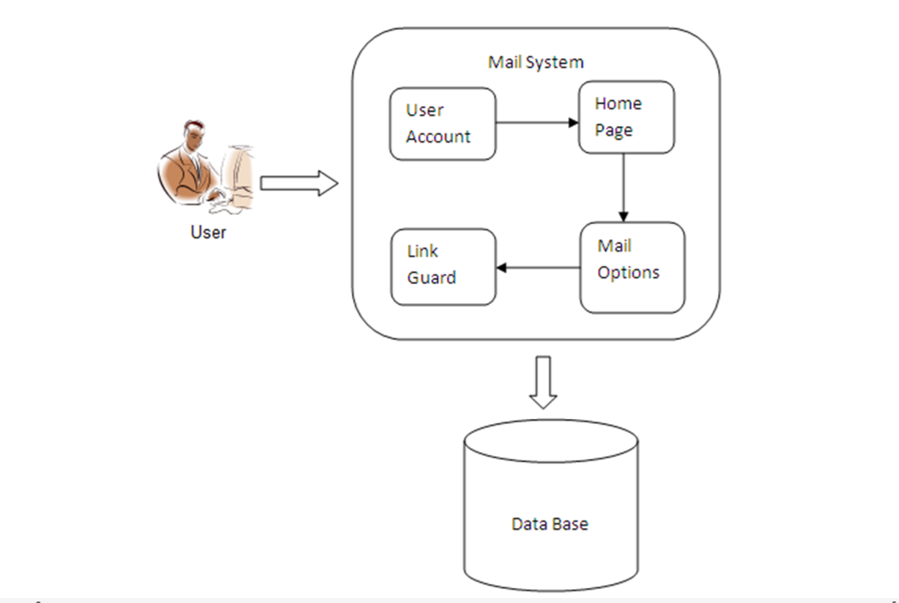

Detection Phishing website
Phishing is a new type of network attack where the attacker creates a replica of an existing web page to fool users in to submitting personal, financial, or password data to what they think is their service provider’s website. repo.
The concept is an end-host based anti-phishing algorithm, called the Link Guard, by utilizing the generic characteristics of the hyperlinks in phishing attacks. The link Guard algorithm is the concept for finding the phishing emails sent by the phisher to grasp the information of the end user. Link Guard is based on the careful analysis of the characteristics of phishing hyperlinks. Each end user is implemented with Link Guard algorithm. After doing so the end user recognizes the phishing emails and can avoid responding to such mails. Since Link Guard is characteristics based it can detect and prevent not only known phishing attacks but also unknown ones. The project uses the Dotnet technologies and SQL Server.

Mail server creation is the first module in this project. Initially the mail server is created to communicate with the difference persons through email server. The mail server environment includes the option for sending email through recipient through composer option and they can receive the mail from various recipients. The mail server also has the option for viewing sent mails, spam mails and deleted mails.
In the user registration module, initially they have to create a account to transfer the mail to various recipients. Once the registration is completed successfully they can login to send mails and receive mails from various users. During the registration process the details about the individual users are gathered and stored into the server. Each and every time user login to the server and check whether the authenticated users login or unauthorized users processing.
We also experimented with KD-Trees to optimize the search for neighbors. Unfortunately, the high dimensionality of the dataset (21 features) and its modest size hindered performance, leading to slower execution times compared to the brute force approach.
In this module user abstraction is built. The user can send the data to the receiver using the user’s mail id, subject and content of the information or attachments of the information and can be able to send the data efficiently. The user can view the list of mails sent by the user in the sent mail folder. The mails which are reported as spam can be viewed in the spam folder. Once the mail is sent successfully the message will be indicated to the sender that the mail has been sent successfully.
The received mail can be checked if it is phishing or not, the implementation of which is given in the next module. The compose mail option contains an option for spoof id. The spoof id allows the mail of the composer to be delivered with a different from address. This is being incorporated to demonstrate the Link Guard algorithm.
The module contains the implementation of the Link Guard algorithm. It is possible for the user to add domain names and categorize them as either white list or black list under settings. Whenever a mail is detected as phishing the domain name in that mail automatically gets added as black list. The Link Guard algorithm checks if the domain names fall under any of the 5 categories of hyperlinks for phishing emails. It also refers to the database of black and white list entries and sets the status of the mail as either Phishing or Non-Phishing.